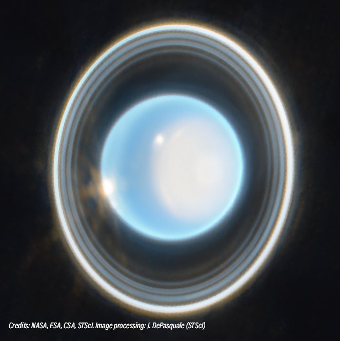
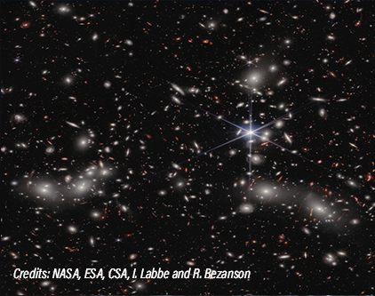
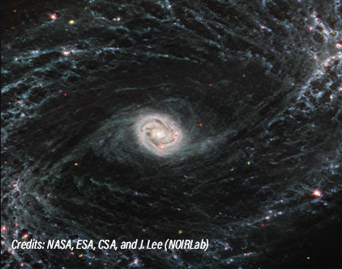
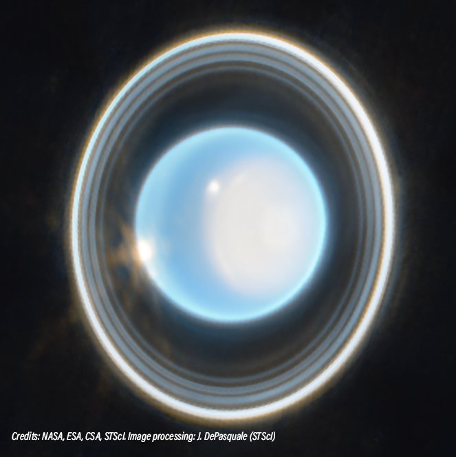
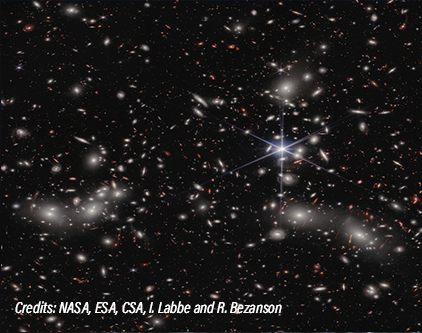
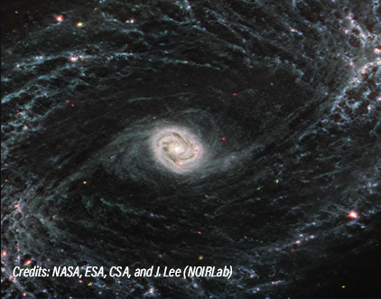

JUST JWST JOURNAL
27 March 2023
A team of scientists led by astrophysicist Thomas Greene has used the JWST to measure the temperature of the rocky exoplanet known as Trappist 1-B.
22 March 2023
Scientists using NASA's James Webb Space Telescope have discovered silicate cloud features in the atmosphere of a remote planet.
14 March 2023
One of the first observations made by JWST in June 2022 was a Wolf-Rayet star - one of the most luminous, most massive and most briefly detectable stars known - a rare sighting.
 




